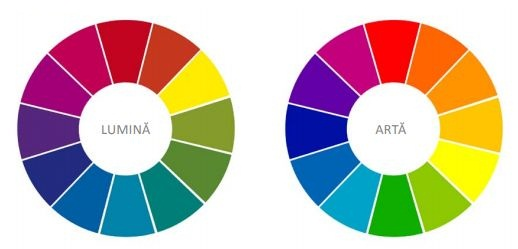
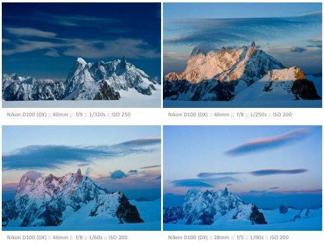
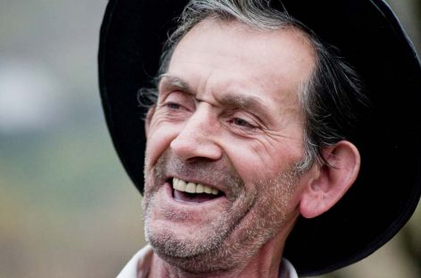
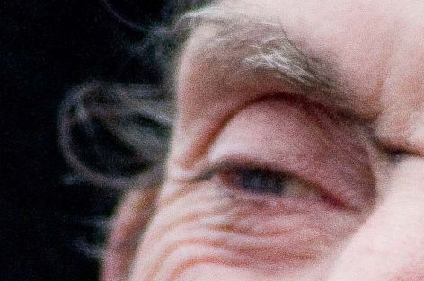

Cursul 4 - Modificarea luminii pe parcursul unei zile
"Primele 10 000 de fotografii ale tale sunt cele mai proaste." - Henri Cartier-Bresson
"Primele 10 000 de fotografii ale tale sunt cele mai proaste." - Henri Cartier-Bresson
Asa cum va puteti imagina exista numeroase moduri de a
combina culorile, atat contrastant, dar si armonios, atunci
cand combinam culori apropiate ca nuanta. Combinatia
de contraste creaza dramatism, cea armonioasa creaza
atmosfera.
Prima imagine este compusa in cea mai mare parte din
nuante de albastru si de portocaliu, ceea ce inseamna ca
desi avem un contrast, culorile aflandu-se diametral opus
in roata, acestea sunt complementare si se armonizeaza
frumos. In a doua imagine putem vedea o combinatie
armonioasa de culori calde.
In prima reprezentare grafica, putem identifica, intr-o varianta simplificata,
culorile primare aditive, cele care alcatuiesc lumina. Cand vine insa vorba de culoare, asa cum
este ea perceputa in arta, adica vizual, culorile se alcatuiesc in roata a doua, cea a
culorilor substractive, iar in acest caz avem ca si culori primare: rosu, galben si albastru.
Diametral opus in aceasta aranjare, se intalnesc culorile complementare. Cand vom discuta
despre culoare asa cum o percepem noi vizual in fotografie, ne vom referi la aceasta
reprezentare grafica:

Totalitatea cantitatii de lumina ce intra in camera ti este
receptionata de senzorul digital, in timpul realizarii unei
imagini, reprezinta expunerea.
Cele doua elemente care controleaza creativ expunerea
sunt diafragma (ce poate modifica profunzimea de
camp) si obturatorul (ce modifica timpul de expunere).
Expunerea este afectata ti de sensibilitatea senzorului,
ajustata de valorarea ISO.
Expunerea corecta este vitala in orice fotografie,
deoarece creaza atmosfera, subliniaza lumina ti formele,
reda corect culoarea, separa tonurile ti subliniaza
detaliile.
Daca o imagine se expune mai mult decat trebuie,
aceasta va avea tonuri mai deschise ti va avea zone de
alb fara detaliu, fotografia devine astfel supraexpusa.
Daca se expune mai putin, fotografia va avea tonuri mai
intunecate ti uneori lipsite de detalii ti putem spune in
acest caz ca este subexpusa.
Pe parcursul unei zile, culoarea trece de la rece la cald. Mai jos puteti vedea patru fotografii
cu acelati munte fotografiat atat in lumina rece din mijlocul zilei (prima imagine), dar ti intr-o lumina calda de
apus de soare (a doua imagine). Urmatoarele doua fotografii reprezinta un moment de dupa apusul soarelui ti
unul din "ora albastra" de seara. Putem vedea foarte bine evolutia luminii pe tot acest parcurs.
Partea a doua a schitei arata lumina frontala ti contralumina ti se schimba ti unghiul de fotografiere pentru a putea evidentia aceste
doua cazuri. Lumina frontala apare atunci cand avem soarele in spatele nostru, iar cea din spate cand acesta este in fata noastra.
Directia este calculata in functie de cum cade lumina pe subiect ti nu in functie de cum este pozitionat fotograful fata de aceasta.
Momentele de apus ti rasarit pot fi influentate foarte mult de zona de pe glob in care ne aflam. in imaginea din dreapta
am fotografiat pasarea in apus de soare la miezul noptii, iar soarele inca mai era pe cer, datorita faptului ca eram foarte
aproape de Cercul Polar in plina vara.
Grande Jorasses, Mont Blanc, Franta - foto 1-4; Chira arctica - Husavik, Islanda - foto 5

aparatul foto ofera mai multe moduri de expunere,
astfel identificand programe automate (pentru diferite
tipuri de subiecte), programe semiautomate (prioritate
de timp sau de diafragma) ti un mod manual.
Modurile automate predefinite
Sunt intalnite cel mai adesea la camerele DSLR din gama
entry level, insa lipsesc la camerele semiprofesionale
ti profesionale. aceste moduri automate va ofera o
reglare automata a parametrilor in functie de subiectul
ales, avand predefinite programe pentru macro, peisaj,
actiune, portret etc. Masurarea expunerii se face in acest
caz automat ti nu aveti posibilitatea sa faceti ajustari
manuale.
Modul program (P)
acest mod, deti este un mod automat, alege singur
valorile de expunere, diafragma ti obturatorul, insa
va lasa sa modificati aceste valori in pereche. Daca de
exemplu recomandarea aparatului a fost f/2.8 cu 1/30,
puteti alege o alta diafragma sau un alt timp, dupa
preferinta, celalalt parametru fiind ti el ajustat automat.
Uneori o imagine se poate realiza foarte utor, fara probleme
tehnice deosebite, ata cum se poate vedea in prima
fotografie alaturata. in acest caz nu prea conteaza in ce
mod al aparatului lucrati, deoarece obtineti utor rezultatul
dorit. alteori insa, in momentele in care expunerea este
mai dificila, cu un contrast foarte mare, ata cum se vede in
a doua imagine, alegerea modului de expunere este foarte
importanta (modul manual in exemplu).
ISO reprezenta in trecut sensibilitatea filmului, fiecare rola
avand o valoare prestabilita din fabricare. La camerele
digitale senzorul poate emula aceasta sensibilitate. Cu cat
valoarea ISO este mai mare cu atat senzorul devine mai
sensibil ti are nevoie de o cantitate mai mica de lumina
pentru a fi expus corect.
La fel ca ti timpul de expunere ISO este exprimat in numere
ce reprezinta valori intregi sau treimi ale acestora. in cele
mai multe dintre cazuri avem valori de 100, 200, 400, 800,
1600 etc., fiecare valoare dubland cu cate un stop de lumina
pe precedenta.
alegerea ISO se poate face fie automat, fie manual. Nu este
recomandata varianta automata, deoarece aceasta poate
alege valori mult prea mari care vor avea efecte negative
asupra imaginii finale.
atunci cand vrem sa folosim valori ISO mai ridicate,
trebuie sa punem in balanta avantajele ti dezavantajele
generate de acest aspect. Cel mai deranjant este
zgomotul de imagine, ce apare sub forma unor artefacte,
asemeni unei granulatii, ce altereaza detaliile fine din
imagine.
avantaje:
Zgomotul de imagine poate fi foarte utor identificat daca
vizualizam imaginea la zoom 100%, ata cum se vede ti in
imaginile alaturate. (Suciu de Sus, Maramuret)


Tabel ce ne arata valorile ISO ale unui aparat foto. intre numerele ingrotate avem un stop de lumina, la fel ca la diafragma
sau obturator.